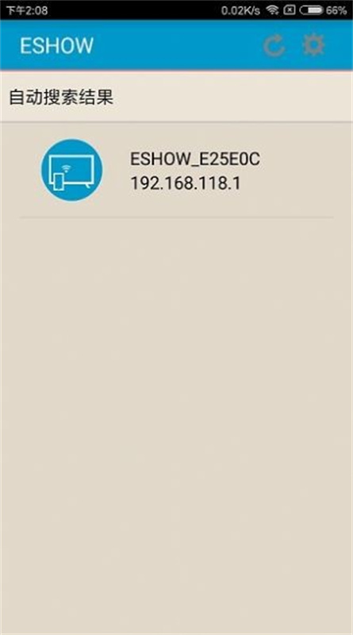

用了半年 ESHOW，我对这款无线投屏 App 改口了
最初只是为了应付会议投屏的临时工具，用了大半年才发现 ESHOW 远不止"把手机画面扔到大屏"这么简单——有些地方越用越顺手，有些坑是时间长了才暴露的。
装 ESHOW 的时候没多想，就是公司会议室的 AWIND 奇机大屏要配个投屏软件，IT 推荐去eshow官网瞄一眼就装上了。那时候刚从 A-100 换到 A-900，以为只是换了台接收端盒子，软件随便从下载拿一份装一下就行。
越用越顺手的三件事
最先被打脸的是搜索体验。第一次进会议室掏手机开 ESHOW，列表里十来台设备同时冒出来，信号强度从高到低排，哪个是隔壁哪个是本间完全认不出来。前三次投错大屏就是这么来的——点了信号最强的那台，结果是走廊那头的展厅屏。
后来才摸到门道：先走到大屏跟前记住待机画面上的设备名，回手机搜列表逐行比对。这个流程现在已经成了肌肉记忆，进会议室先瞟大屏再掏手机，比当年盲点靠谱太多。说个反直觉的——记忆成本其实不高，把每个会议室的设备名存成手机备忘录一条，301 对 ESHOW_A1B2C3、302 对 ESHOW_D4E5F6，进会议室看到屏上的号直接翻备忘录，比在列表里瞎点快多了。
然后是相机投法。这个功能最初以为是个花架子，直到部门来了个做样品的同事，把手机摄像头对准电路板焊点，大屏上所有人同时看清细节——后排的老工程师凑到跟前看都没这么清楚。后来我自己也用它扫纸质文档，现场没有投影仪的时候，拍一张文件实时上屏，比挨个传阅效率高了不知多少。手机发热是真的，但接个充电宝就忍了。
第三件让我刮目相看的是反向控制。A-900 支持鼠标反向操作和 16 点触摸回传，培训的时候老师走到大屏前直接触摸 PPT 翻页、圈重点，不用再回电脑前按键盘。对我这种上台就紧张、总忘遥控器放哪的人来说，大屏变成大号触控板这件事，直接把演讲焦虑降低了一个档次。

越用越烦的那些坑
但时间长了，几个当初没注意的问题慢慢浮出来。
最烦的是接收端热点不能同时上网。现场没路由器的时候，手机连接收端的热点就能投屏，这一点确实救过好几次——临时租的会议室没配网络，展会场地 Wi-Fi 限流，都是靠这个功能搞定的。但热点是单一 AP，默认不提供互联网出口，投屏的时候想同时查个资料、切个后台，就得换网络。我那台老安卓倒是有双 Wi-Fi，但也不是每次都能正常切，最稳的方案还是提前把所有内容下载到手机本地，别存侥幸。
第二个坑是手机端反向控制的兼容性。后来去eshow文档翻了一下才确认，反向控制主要针对电脑端，手机端的触摸回传需要 ESHOW 和手机系统都支持。实测下来，公司那几台安卓手机还好，但 iPhone 上有时候大屏上的操作不能完全同步到手机屏幕，延迟能到两三秒，互动感大打折扣。这个问题不是每次都出现，但一出现就挺尴尬的——会议上圈了重点，手机上迟迟没反应，参会的人都看着大屏等。
还有个长期才暴露的小毛病：多台手机同时接的时候带宽会掉。AWIND 奇机接收端最多支持 16 路同时接入，但同一时刻大屏只能显示一台发送端的内容。实际场景里通常是两三个人轮流演示，问题不大，但有一次部门做培训，五个人同时开着 ESHOW 等着轮播，轮到我的时候画面明显卡，切投法都要等好几秒才生效。后来才知道带宽是分摊的，多台同时在线就算只有一个人在投，其他人的链路也在占带宽。

哪些功能成了每天离不开的，哪些再也没碰过
说每天离不开可能夸张了点，但有几个场景确实离不开 ESHOW。
无路由器配对这个功能，在我出差频率高了之后就变成了刚需。客户办公室网络限制多，访客设备经常连不上；户外培训场地信号弱，移动数据靠不住；甚至有时候就是进了个临时会议室，连个 Wi-Fi 路由器都没配。这时候接收端自带的热点，默认 ESHOW_xxxx 加 12345678 的密码，手机连上去开 ESHOW，3 秒就能搜到设备，全程不碰现场任何网络设备。
反而镜像投屏这个最基础的功能，现在用得比想象中少。音视频投法推媒体文件更稳，相机投法做现场演示更灵活，镜像投法基本只在 PPT 演示和 App 操作演示的时候才用。三种投法并列选择，连接过程中随时可以切换，断连重连就能换，这套设计倒是挺聪明。
触摸回传的 16 点支持我至今没用到过——实际会议场景里有个三五点就够用了，但知道 A-900 硬件规格在 A 系列里最高这件事，让我对这套设备的整体耐用性多了几分信心。反倒是 A-100 没有反向控制这个事实，在我们换接收端的时候成了采购决策的关键依据，最后还是选了 A-900。
当初的判断，现在变了什么
刚装 ESHOW 的时候，我以为它就是个「把手机画面扔到大屏上」的工具，跟市面上其他投屏 App 没什么区别，用哪个都一样。半年过去了，这个判断彻底变了。
高估了的是它的跨平台兼容性。反向控制在电脑端体验很好，但手机端尤其是 iPhone 上的表现，远不如文档里写得那么顺畅。热点模式下不能同时上网，也让它在需要边投边查资料的场景里大打折扣。
低估了的是它对企业场景的适配深度。多会议室部署下的设备名识别、接收端热点的自救能力、三种投法应对不同需求的灵活组合——这些东西不是靠广告能看出来的，只有在真的遇到问题、真的在各种场地里用过之后，才会觉得这套设计是花了心思的。
去留结论
现在问我会不会卸载 ESHOW？不会。
什么时候会考虑换？大概就是 AWIND 奇机这套接收端换了品牌，或者 ESHOW 出现了严重的兼容性问题修不好的时候。半年用下来，它在我的工作流里已经从「可有可无的工具」变成了「会议出差必备」，尤其是无路由器配对这个功能，已经帮我撑过了好几次网络灾难。
但也不会说它完美。手机端反向控制的延迟、热点模式下的带宽限制，这些问题确实影响体验。好在它们都有 workaround——提前离线内容、错开轮播的手机数量，基本能覆盖九成以上的场景需求。如果哪天 AWIND 固件升级解决了这些兼容性问题，那就是锦上添花了。这套整理的资料在三个公开仓库都能拿到——GitHub 主仓之外，Gitee 和 GitCode 各存了一份备份，国内访问哪个顺手用哪个。